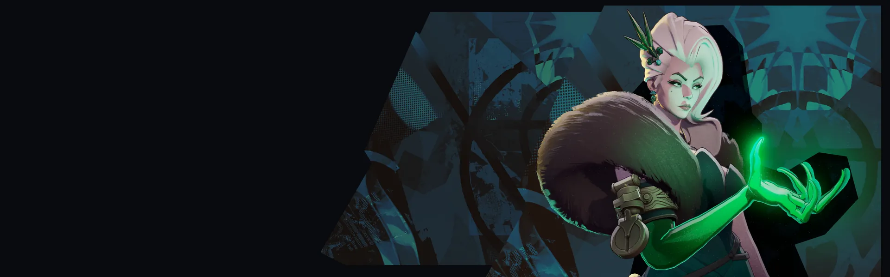
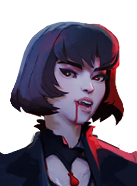
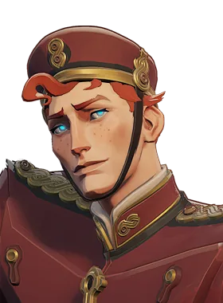
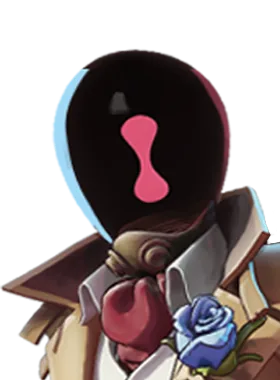
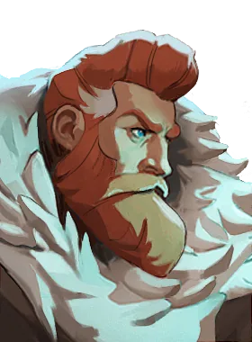
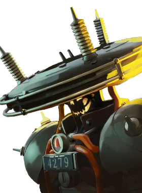
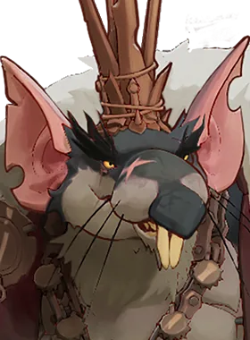
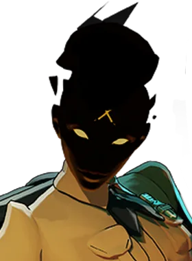
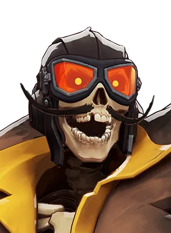
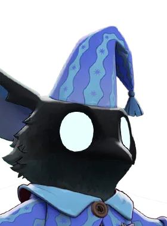

Troca vida por poder, alto risco e alta recompensa.
História
Antigamente, Lady Jeanne Geist era o brinde da cidade. Mas à medida que o tempo passou e a sua beleza desapareceu, ela viu-se cada vez mais longe dos seus dias de glória na Alta Sociedade, até que finalmente não era mais do que uma mulher frágil num lar de idosos, contando histórias de um passado glorioso. E foi então que o Oathkeeper se revelou. Um espírito poderoso de outro plano, o Detentor do Juramento ofereceu-lhe um caminho para recuperar suas glórias passadas... ele poderia restaurar sua juventude; tudo o que ela precisava fazer era drenar a essência dos vivos para se sustentar.
Geist estava dividido. Obviamente, o assassinato era um negócio macabro e, sem dúvida, o Detentor do Juramento não era uma entidade confiável... mas ainda assim, a ideia de ter uma segunda chance de reviver sua juventude era boa demais para ser deixada de lado. E então ela elaborou um plano: depois de fazer um pacto com o Detentor do Juramento, ela iria amarrá-lo e protegê-lo, limitando sua influência e puxando-a para cima. O Detentor do Juramento ainda seria alimentado; mas nos termos dela, não nos dele.
No entanto, à medida que os anos se transformaram em décadas; a força da Proteção enfraqueceu e o Detentor do Juramento está mais faminto do que nunca...
História oficial do jogo, traduzida automaticamente para o português.
Números reais
Habilidades
Gasta parte da própria vida para disparar uma bomba que explode após um breve tempo de armação.
Prende um inimigo para drenar sua vida ao longo do tempo e curar Geist; também pode transferir vida a um herói aliado.
Gasta parte da vida para lançar estilhaços de sangue que acumulam lentidão e dano recebido nos inimigos.
Troca o nível de vida com um inimigo alvo, respeitando limites mínimos de vida.
Builds mais usadas
208.219 partidas registradas com esta build.
Regeneração Extra (800) · Explosão Mística (800) · Espírito Extra (800) · Expansão Mística (800) · Roubo de Vida Espiritual (1.600) · Botas de corrida (800) · Emblema do Encantador (1.600) · Healbane (1.600) · Rito de Cura (800) · Roubo de vida de bala (1.600)
166.941 partidas registradas com esta build.
Botas de corrida (800) · Explosão Mística (800) · Espírito Extra (800) · Expansão Mística (800) · Surto Arcano (1.600) · Supressor (1.600) · Roubo de Vida Espiritual (1.600) · Regeneração Extra (800) · Refutação (800) · Rito de Cura (800)
75.486 partidas registradas com esta build.
Regeneração Extra (800) · Explosão Mística (800) · Expansão Mística (800) · Supressor (1.600) · Resfriamento da compressão (1.600) · Emblema do Encantador (1.600) · Healbane (1.600) · Roubo de Vida Espiritual (1.600) · Caça-tanques (3.200) · Vigor Extra (800)
Confrontos reais
- Pocket — 60.6% de vitória
- Mirage — 60.5% de vitória
- Sinclair — 60.0% de vitória

Mina — 59.5% de vitória
The Doorman — 59.0% de vitória
Paradox — 58.9% de vitória
- Graves — 47.4% de vitória
- Paige — 48.1% de vitória
- Baba — 48.2% de vitória

Kelvin — 48.8% de vitória
Seven — 49.2% de vitória
Rat King — 49.3% de vitória
Ver a página de counters do Lady Geist
O que upar primeiro
Nível por nível, na ordem que os jogadores mais usam em partidas de verdade. A porcentagem mostra quantos escolheram aquela habilidade naquele nível.
Melhores duplas
Heróis que mais ganham jogando junto com ele, em partidas reais (pelo menos 1.500 partidas juntos).
- Graves61,2%

Haze59,6%- Rat King59,4%
- Kelvin59,4%
- Paige59,2%
- Pocket47,6%
- Mirage47,7%
- Mina48,3%
Rota (lane)
Na rota, cada lado joga em dupla. Estes números são de confrontos reais: a diferença de almas é medida com o jogo já começado, então almas no verde significa que ele costuma estar na frente.
- Kelvin — 45,7% de vitória −12 almas (580 partidas)
- Graves — 46,4% de vitória +380 almas (40.148 partidas)
- Paige — 47,9% de vitória +170 almas (27.215 partidas)
- Rat King — 48,9% de vitória −344 almas (89.827 partidas)
- Seven — 49,0% de vitória +207 almas (33.305 partidas)
- Victor — 49,1% de vitória −167 almas (36.584 partidas)
- Haze — 49,5% de vitória −269 almas (69.105 partidas)

Deadman Danny — 49,8% de vitória −559 almas (16.918 partidas)
- Viscous — 60,2% de vitória +443 almas (733 partidas)

Rem — 58,7% de vitória +23 almas (26.189 partidas)- Vyper — 58,6% de vitória +651 almas (495 partidas)
Histórico de win rate
12/10: 50.6% → 30/11: 48.6% → 18/01: 47.0% → 08/03: 53.1% → 26/04: 51.6% → 14/06: 52.0% → 02/08: 49.9% → 20/09: 53.0% → 08/11: 55.9%